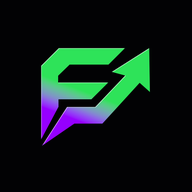

You're offline
Fundly needs an internet connection to show live odds and your account. Check your connection and try again.

Fundly needs an internet connection to show live odds and your account. Check your connection and try again.